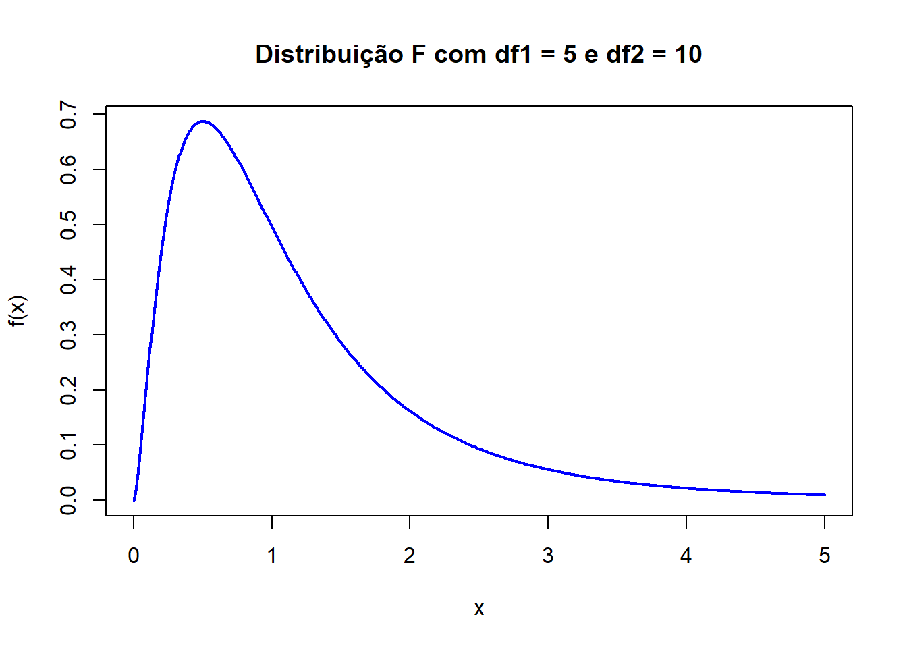
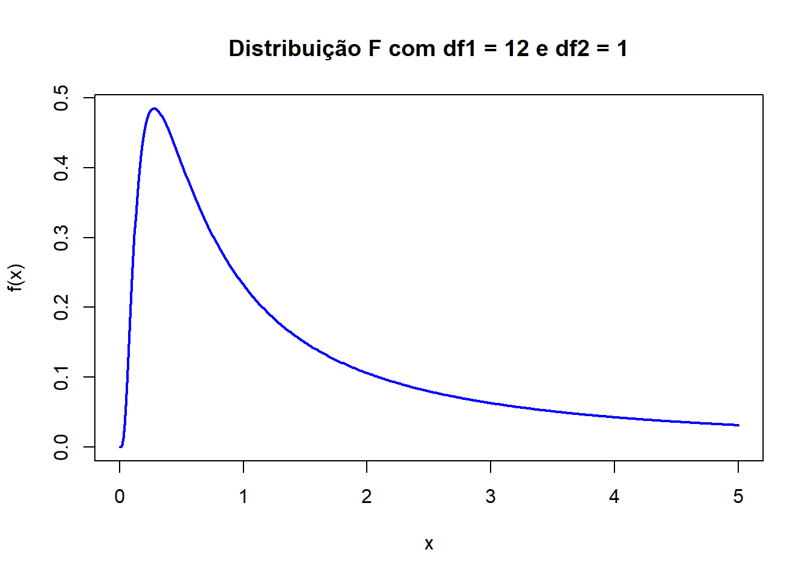

Código
x <- seq(0,5,0.01)
y <- df(x, df1 = 5, df2 = 10)
plot(x, y,
type = "l",
lwd = 2,
col = "blue",
main = "Distribuição F com df1 = 5 e df2 = 10",
xlab = "x",
ylab = "f(x)")


Estatística e Probabilidade
Prof. Ben Dêivide (DEFIM/CAP/UFSJ)
A distribuição F (também conhecida como distribuição F de Snedecor) é uma distribuição de probabilidade contínua utilizada principalmente na comparação de variâncias. Seus valores assumem apenas números reais positivos e sua forma depende de dois parâmetros que são chamados de graus de liberdade. Sua aplicação é fundamental em situações envolvendo populações normais independentes, permitindo verificar diferenças de dispersão entre grupos e auxiliar na análise de modelos estatísticos mais complexos.
Estudar a distribuição F e sua relação com funções de amostras de duas populações normais independentes.
Este trabalho foi desenvolvido por meio de pesquisas bibliográficas em livros, artigos, materiais acadêmicos e vídeos relacionados à distribuição F.
Além dos estudos teóricos, foram realizadas simulações computacionais utilizando a linguagem R, com o objetivo de compreender o comportamento da distribuição F e demonstrar aplicações envolvendo comparação de variâncias de populações normais independentes.
Os exemplos computacionais abordados permitiram compreender os conceitos teóricos com aplicações práticas em Estatística.
A distribuição F é uma distribuição contínua de probabilidade que é definida apenas para valores positivos. Ela é obtida a partir da razão entre duas variáveis aleatórias independentes com distribuição qui-quadrado.
A distribuição F surge quando se divide uma variável qui-quadrada por outra variável qui-quadrada, ambas ajustadas pelos respectivos graus de liberdade.
Exemplo:
\[ U_1 \sim \chi^2(v_1) \] e
\[ U_2 \sim \chi^2(v_2) \]
Logo, ao ajustar essas variáveis para os graus de liberdade, obtém-se:
\[ F=\frac{U_1/v_1}{U_2/v_2} \]
A variável aleatória \(F\) segue uma distribuição F com \(v_1\) e \(v_2\) graus de liberdade, sendo representados por: \[ F \sim F(v_1, v_2) \]
Na qual:
A distribuição F apresenta algumas características importantes:
O formato da distribuição varia conforme os graus da liberdade escolhidos.
Considere duas populações normais independentes:
\[ X_1, X_2, \dots, X_{n_1} \sim N(\mu_1, \sigma_1^2) \]
e
\[ Y_1, Y_2, \dots, Y_{n_2} \sim N(\mu_2, \sigma_2^2) \]
Essas expressões representam duas amostras obtidas de populações com distribuição normal e independentes entre si.
Na primeira e segunda população:
As populações são independentes, o que significa que os valores observados em uma população não interferem nos valores da outra.
A partir dessas amostras, é possível calcular as variâncias amostrais de \(S_1^2\) e \(S_2^2\), que serão utilizadas na construção da distribuição F.
Uma propriedade importante das populações normais afirma que as variâncias amostrais podem ser relacionadas com a distribuição qui-quadrado, pelo fato que esta distribuição é definida matematicamente como a soma dos quadrados de variáveis aleatórias normais independentes.
Logo, para a primeira população, tem-se:
\[ \frac{(n_1-1)S_1^2}{\sigma_1^2} \sim \chi^2(n_1-1) \]
e, para a segunda população:
\[ \frac{(n_2-1)S_2^2}{\sigma_2^2} \sim \chi^2(n_2-1) \] Como as duas populações são independentes, essas variáveis qui-quadrado também serão independentes entre si.
A partir da razão entre essas variáveis ajustadas pelos respectivos graus de liberdade, obtém-se a distribuição F:
\[ F=\frac{S_1^2/\sigma_1^2}{S_2^2/\sigma_2^2} \] Quando as variâncias populacionais são iguais:
\[ \sigma_1^2 = \sigma_2^2 \] A expressão pode ser simplificada para:
\[ F=\frac{S_1^2}{S_2^2} \] Portanto, a variável aleatória segue uma distribuição F com graus de liberdade:
\[ F \sim F(n_1 - 1, \, n_2 - 1) \]
Os graus de liberdade da distribuição F estão associados aos tamanhos das amostras utilizadas na pesquisa. Para amostras de tamanho \(n_1\) e \(n_2\), a distribuição F possui graus de liberdade \((n_1-1, n_2-1)\).
Exemplo:
Os respectivos graus de liberdade serão: \(v_1 = 10 - 1 = 9\) e \(v_2 = 15 - 1 = 14\). Logo, a estatística calculada será confrontada com a distribuição crítica \(F \sim F(9, 14)\).
Na Engenharia Mecatrônica, a distribuição F pode ser utilizada na comparação da variabilidade de sensores e sistemas de medição.
Considere dois sensores de temperatura utilizados em um sistema de automação industrial. Deseja-se verificar se ambos apresentam a mesma variabilidade nas medições realizadas.
Para isso, são coletadas amostras independentes dos dois sensores e calculadas suas variâncias amostrais:
\[ S_1^2 \]
e
\[ S_2^2 \] A estatística F então será calculada por:
\[ F=\frac{S_1^2}{S_2^2} \] Se o valor encontrado for muito diferente de 1, isso pode indicar que os sensores possuem níveis de precisão diferentes, logo um dos sensores pode precisar de manutenção.
Explicação das variáveis que serão utilizadas:
x <- seq(0,5,0.01)
y <- df(x, df1 = 5, df2 = 10)
plot(x, y,
type = "l",
lwd = 2,
col = "blue",
main = "Distribuição F com df1 = 5 e df2 = 10",
xlab = "x",
ylab = "f(x)")
x <- seq(0,5,0.01)
y <- df(x, df1 = 12, df2 = 1)
plot(x, y,
type = "l",
lwd = 2,
col = "blue",
main = "Distribuição F com df1 = 12 e df2 = 1",
xlab = "x",
ylab = "f(x)")
O código desenvolvido em R teve o intuito de demonstrar o gráfico da função F a partir de determinados graus de liberdade.
Inicialmente, foi criada uma sequência de valores no eixo horizontal por meio da função seq(). Em seguida, foi utilizada a função df() para calcular os valores da densidade da distribuição F considerando df1 = 5 e df2 = 10 (Gráfico 1) e df1 = 12 e df2 = 1 (Gráfico 2).
Por fim, utilizamos a função plot() para gerar o gráfico da distribuição, permitindo visualizar características importantes da função F, como:
A análise comparativa das simulações computacionais confirmou o comportamento teórico previsto para a distribuição F. Observou-se nitidamente que a curva está restrita ao quadrante positivo do plano cartesiano e exibe assimetria à direita.
Comparando o Gráfico 1 (\(df_1 = 5, df_2 = 10\)) com o Gráfico 2 (\(df_1 = 12, df_2 = 1\)), fica evidente a sensibilidade da função em relação aos graus de liberdade do denominador (\(df_2\)). Valores baixos de graus de liberdade concentram a densidade de probabilidade drasticamente próxima à origem, com uma cauda longa e pesada, enquanto o aumento dos parâmetros suaviza a curva em direção a um comportamento de distribuição normal.
No contexto prático da Engenharia Mecatrônica, a validação dessa estatística provou ser uma ferramenta robusta para tomada de decisões preditivas, permitindo diagnosticar falhas ocultas de precisão em instrumentação industrial antes que estas afetem a qualidade do produto final.
Conclui-se que a distribuição F possui grande importância dentro da estatística, especialmente em problemas relacionados à comparação e análise de variâncias.
Ao longo deste trabalho, foi possível compreender sua construção matemática a partir da razão entre duas variáveis de distribuição qui-quadrado independentes, bem como a sua relação com populações normais independentes.
As aplicações utilizando a linguagem R permitiram compreender a distribuição F e entender suas principais características.
Dessa forma, os objetivos propostos neste trabalho foram atingidos.
[1] MORETTIN, P. A.; BUSSAB, W. O. Estatística Básica. 9. ed. São Paulo: Saraiva, 2017.
[2] MONTGOMERY, D. C.; RUNGER, G. C. Applied Statistics and Probability for Engineers. 6. ed. Hoboken, NJ: John Wiley & Sons, Inc., 2014.
[3] MAGALHÃES, M. N.; LIMA, A. C. P. Noções de Probabilidade e Estatística. 7. ed. São Paulo: EDUSP, 2015.